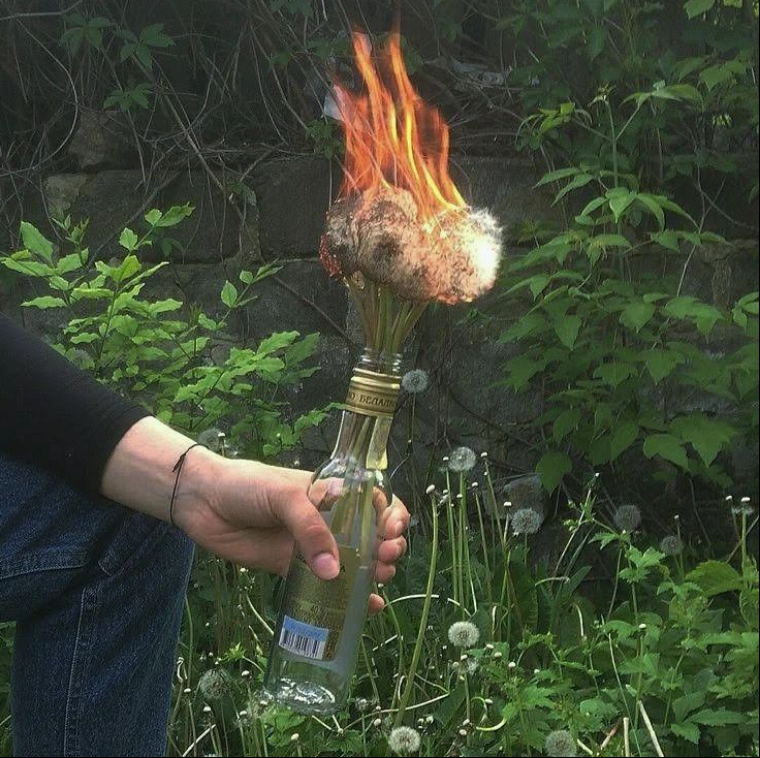
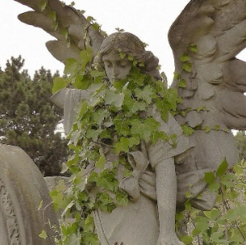

Poemas
Incinerando sonhos

Minha alma grita com vozes angelicais assim,pedindo pela paz.
Agonizando dentro do peito o sentimento fluido de sempre sair perdendo,
Só estou correndo do medo enquanto escuto o sopro do vento.
Pele agora gélida de ansiedade que antes estava suando com o clima árduo do verão
Cada estação traz algo diferente,podendo ser,novas situações ou uma nova emoção.
O que se encontra de igual entre tudo isso é que sempre voltamos a encontrar dentes de leão,flores mais vivas com o calor e lágrimas caindo antes mesmo do fim.
E o fim está na ponta de um isqueiro,só basta incendiar tudo com um último suspiro.
As vezes seu pior inimigo é um sonho inusitado que não foi concluído.
Então feche os olhos,e retorne pra lá.
Volte para casa.
Inesperado

Onde não tem a semente da esperança não há colheita de sonho algum.
Sem resultado e satisfação, não resta mais segurança do que a por vir.
Terra seca muita das vezes não pode só aguardar pela chuva,precisa de algo que a acompanhe todos os dias.
Ervas daninhas são iguais pessoas desagradáveis,tem em todo canto,só não as deixe tomar conta de tudo.
Minha alma grita com vozes angelicais assim,pedindo pela paz.
Agonizando dentro do peito o sentimento fluido de sempre sair perdendo,
Só estou correndo do medo enquanto escuto o sopro do vento.
Pele agora gélida de ansiedade que antes estava suando com o clima árduo do verão
Cada estação traz algo diferente,podendo ser,novas situações ou uma nova emoção.
O que se encontra de igual entre tudo isso é que sempre voltamos a encontrar dentes de leão,flores mais vivas com o calor e lágrimas caindo antes mesmo do fim.
E o fim está na ponta de um isqueiro,só basta incendiar tudo com um último suspiro.
As vezes seu pior inimigo é um sonho inusitado que não foi concluído.
Então feche os olhos,e retorne pra lá.
Volte para casa.
Onde não tem a semente da esperança não há colheita de sonho algum. Sem resultado e satisfação, não resta mais segurança do que a por vir. Terra seca muita das vezes não pode só aguardar pela chuva,precisa de algo que a acompanhe todos os dias. Ervas daninhas são iguais pessoas desagradáveis,tem em todo canto,só não as deixe tomar conta de tudo.